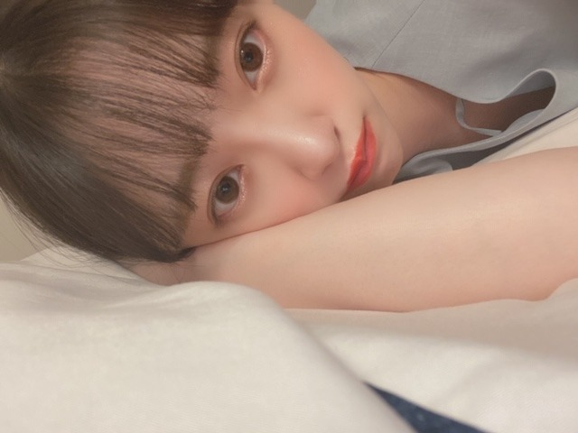
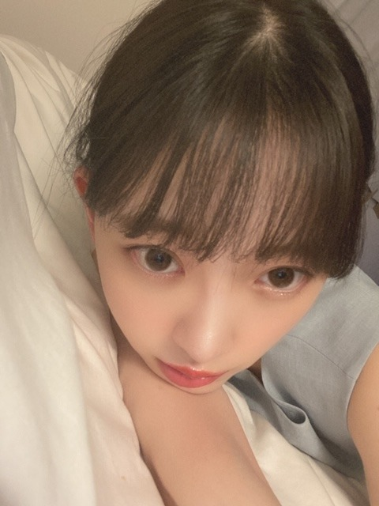
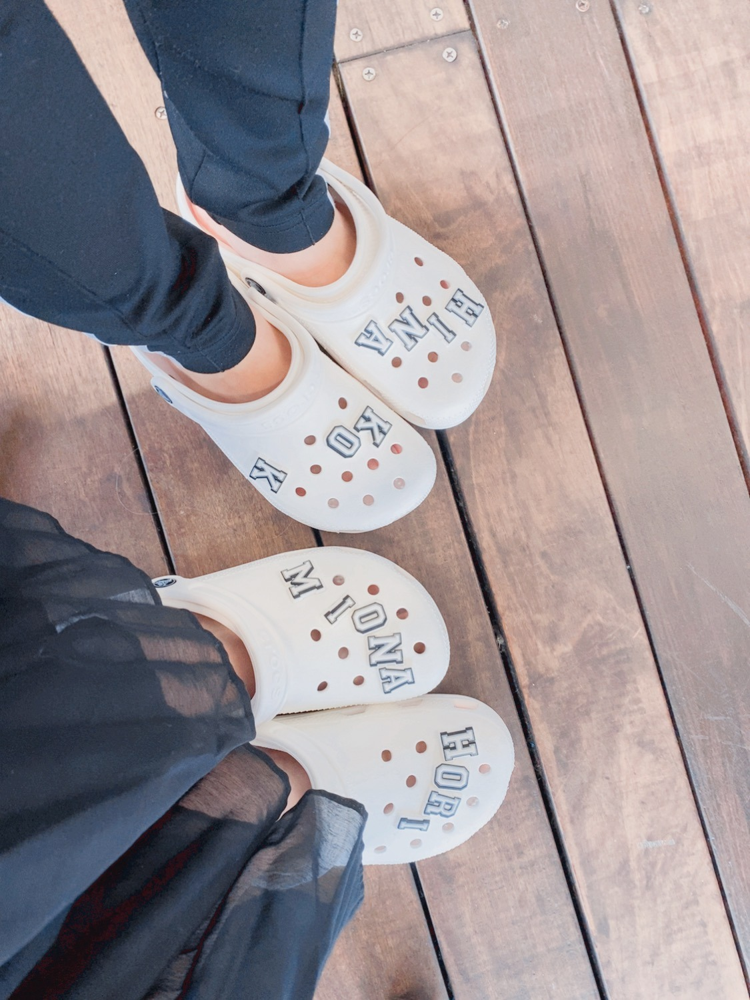

2020/0711Satマヨネーズとマスタードでした
こんにちは
なんだか最近梅雨に引っ張られて
お家ではぐたーっとしてしまいます


起き上がるのに時間がかかります
起こしてーって手を伸ばして
お母さんに手を引っ張られて
ようやく起き上がります
˗ˏˋぐでたま ˎˊ˗
˗ˏˋぐでたま ˎˊ˗
シャキッとせなあかんねー

おそろ
中田花奈さんのこれからの道も、
キラキラと美しく
充実したものでありますように
2020/07/11 10:36
コメント(266)
未央奈ちゃーーーーん♥️、ブログ更新ありがとうございます❗
7月に入ってから梅雨が多くなってきて、僕はずっと蒸し暑い思いで過ごしましたが、でも昼頃には雷が光出すと同時に大きな音で何回も鳴り出してきたり雨が強く降り始めてきたので僕はずっと停電にならないでくれ～！と思うくらいな怖さでした❗ ☀️。
でも今日の朝、ネットのニュースで中田花奈さんの卒業発表を見たときは衝撃的な思いとなり❗ ☀️、または今年の間に乃木坂の1期生メンバーから3人が卒業され、残りの1期生には飛鳥ちゃんと真夏さんら8人だけとなるので本当に悲しい思いでした 。
あとは東京都のコロナ感染者が緊急事態宣言解除後に3日連続で200人を超えているほど危ない事態になっているので未央奈ちゃんと他の乃木坂の皆様も感染しないように気を付けてください。
7月に入ってから梅雨が多くなってきて、僕はずっと蒸し暑い思いで過ごしましたが、でも昼頃には雷が光出すと同時に大きな音で何回も鳴り出してきたり雨が強く降り始めてきたので僕はずっと停電にならないでくれ～！と思うくらいな怖さでした❗ ☀️。
でも今日の朝、ネットのニュースで中田花奈さんの卒業発表を見たときは衝撃的な思いとなり❗ ☀️、または今年の間に乃木坂の1期生メンバーから3人が卒業され、残りの1期生には飛鳥ちゃんと真夏さんら8人だけとなるので本当に悲しい思いでした 。
あとは東京都のコロナ感染者が緊急事態宣言解除後に3日連続で200人を超えているほど危ない事態になっているので未央奈ちゃんと他の乃木坂の皆様も感染しないように気を付けてください。
未央奈さん、こんばんは
プライベート感満載で自然過ぎる～
今ならではの貴重な写真
ありがとうございます(^_^)
花奈さんを優しく見守って
あげましょうね
プライベート感満載で自然過ぎる～
今ならではの貴重な写真
ありがとうございます(^_^)
花奈さんを優しく見守って
あげましょうね
未央奈大丈夫？在宅が続いたから身体がなまっちゃうっていうこともあるかもしれないね。
天気が悪いとみんな落ち込むしメンバーの卒業はやはり支え合ってきた仲間として悲しいよね。それでも毎回涙と笑顔で送り出してはお互いを思いやりつながっている、そんな乃木坂46が大好きになり最近ファンになった者です。
この場所に投稿しているのは自分が2期生とアンダーメンバーのファンだからです。まだ事情を知らない時でもアナスターシャを聞いた時は涙が流れました..
今後は残る現役メンバーと卒業生の活躍を見守りつつ、未央奈たち2期生の応援をさせてもらうよ！よろしく(^^)/
天気が悪いとみんな落ち込むしメンバーの卒業はやはり支え合ってきた仲間として悲しいよね。それでも毎回涙と笑顔で送り出してはお互いを思いやりつながっている、そんな乃木坂46が大好きになり最近ファンになった者です。
この場所に投稿しているのは自分が2期生とアンダーメンバーのファンだからです。まだ事情を知らない時でもアナスターシャを聞いた時は涙が流れました..
今後は残る現役メンバーと卒業生の活躍を見守りつつ、未央奈たち2期生の応援をさせてもらうよ！よろしく(^^)/
みおな


雨強いなー
これ全部避けて帰るのは
結構きついから
全部受け止めて帰るわ
(傘ないんでね)
これ全部避けて帰るのは
結構きついから
全部受け止めて帰るわ
(傘ないんでね)
こんにちは‼︎
ブログ更新、ありがとうございます♪
低気圧の影響かなあ？
自分も、雨の日はなんか気だるくて、寝起きがしゃきっとしません(苦笑)。
かなちゃんの卒業発表。
いつかこういう時期が来るとは思いつつ、実際に発表されると、やっぱり寂しくなっちゃいますね…
ここのところ、1期生の卒業が続いていて。
乃木坂が少しずつ形を変えていくのを目の当たりにしている感じがします。
これからは、2期生をはじめとした後輩たちが担う部分が増えていくと思います。
その中心にいるのは、間違いなく未央奈。
どのような変革を辿っていくのか、しっかりと目に収めようと思います‼︎
かなちゃん、まだ卒業後どうするかは決めていないようですが、いろいろと多才な人だし、どういう方向になってもやっていけると思います。
頑張ってほしいですね‼︎
ではでは、また。
明日も未央奈にとっていい1日になりますように♪
ブログ更新、ありがとうございます♪
低気圧の影響かなあ？
自分も、雨の日はなんか気だるくて、寝起きがしゃきっとしません(苦笑)。
かなちゃんの卒業発表。
いつかこういう時期が来るとは思いつつ、実際に発表されると、やっぱり寂しくなっちゃいますね…
ここのところ、1期生の卒業が続いていて。
乃木坂が少しずつ形を変えていくのを目の当たりにしている感じがします。
これからは、2期生をはじめとした後輩たちが担う部分が増えていくと思います。
その中心にいるのは、間違いなく未央奈。
どのような変革を辿っていくのか、しっかりと目に収めようと思います‼︎
かなちゃん、まだ卒業後どうするかは決めていないようですが、いろいろと多才な人だし、どういう方向になってもやっていけると思います。
頑張ってほしいですね‼︎
ではでは、また。
明日も未央奈にとっていい1日になりますように♪
梅ちゃん可愛いです。
またのブログ待ってます
またのブログ待ってます
未央奈～ こんにちは
ブログ更新ありがとうございます。
かなりんの卒業発表には、ホント驚きました。
ブログの更新、７５５など筆まめの未央奈でも、「１８００回」を超えるかなりんのブログ数には、ホント驚かされます。
何よりキレキレのダンスが、かなりんらしさだったと思いますが、生ドル、乃木團、カナヲ、フォーチュン中田‥‥、とにかく多方面で活躍、その存在感は抜群でした。中でも、未央奈といっしょに活動した「サンエト」のことが印象に残っています。
残り数か月？ かなりんから、いろんなこと引き継いでおいてくださいね。そう、今のうちに存分に甘えておいてください。
一段落したと思ったら、また今夜も岐阜は大雨、大きな災害になりませぬよう、祈ってやみません。
ブログ更新ありがとうございます。
かなりんの卒業発表には、ホント驚きました。
ブログの更新、７５５など筆まめの未央奈でも、「１８００回」を超えるかなりんのブログ数には、ホント驚かされます。
何よりキレキレのダンスが、かなりんらしさだったと思いますが、生ドル、乃木團、カナヲ、フォーチュン中田‥‥、とにかく多方面で活躍、その存在感は抜群でした。中でも、未央奈といっしょに活動した「サンエト」のことが印象に残っています。
残り数か月？ かなりんから、いろんなこと引き継いでおいてくださいね。そう、今のうちに存分に甘えておいてください。
一段落したと思ったら、また今夜も岐阜は大雨、大きな災害になりませぬよう、祈ってやみません。
こんばんは！
同じくです。自分も仕事から帰ったらベッドでグターッと横になってます。
梅雨の時期はなかなか元気がでませんね…。
同じくです。自分も仕事から帰ったらベッドでグターッと横になってます。
梅雨の時期はなかなか元気がでませんね…。
ブログの更新ありがとうございます。
梅雨☔☔☔☔☔に僕も引っ張られてぐたーってしています。
どの写真も可愛すぎます❗
寝起きを良くする方法を教えて下さい！
梅雨☔☔☔☔☔に僕も引っ張られてぐたーってしています。
どの写真も可愛すぎます❗
寝起きを良くする方法を教えて下さい！
ぉいしいものたべてシャキッとするのも
いいですけれども☆
ぐだっとできるとににはそれもまたよいのでわ♪
いいですけれども☆
ぐだっとできるとににはそれもまたよいのでわ♪
未央奈ちゃんこんばんは☺️
天気の優れない日が続くと気分も落ちちゃうよね
(>_<)
俺もシャキっとしなきゃ
明日もHAPPYを
お休みなさい(^-^ゞ
中田さんの進む道を応援しています
天気の優れない日が続くと気分も落ちちゃうよね
(>_<)
俺もシャキっとしなきゃ
明日もHAPPYを
お休みなさい(^-^ゞ
中田さんの進む道を応援しています
堀さん、こんばんは。
ぐたーっとした堀さんはドシャ降りで散歩いけなくて拗ねてる犬みたいで可愛いです。引っ張ってもらったりで堀さんが甘えるチャンスを失うのは残念ですけど、早く梅雨が明けてほしいものですね。
お揃いの靴も良いですね。なんだか2人がルームシェアして暮らしてるのを想像しました。
最後の写真はおでこが美しいです。自分で卒業を決める人とそれを前向きに送り出す人っていう関係性は美しいから、それも中田さんが通ってきたキラキラした美しい道の一部なんですね。年が近くて尊敬できる人達に、沢山出会えて近くで見れて刺激を与えあえる所も、アイドルの素晴らしい所なのかなって思いました。
ぐたーっとした堀さんはドシャ降りで散歩いけなくて拗ねてる犬みたいで可愛いです。引っ張ってもらったりで堀さんが甘えるチャンスを失うのは残念ですけど、早く梅雨が明けてほしいものですね。
お揃いの靴も良いですね。なんだか2人がルームシェアして暮らしてるのを想像しました。
最後の写真はおでこが美しいです。自分で卒業を決める人とそれを前向きに送り出す人っていう関係性は美しいから、それも中田さんが通ってきたキラキラした美しい道の一部なんですね。年が近くて尊敬できる人達に、沢山出会えて近くで見れて刺激を与えあえる所も、アイドルの素晴らしい所なのかなって思いました。
#最近、気付いたこと
グランツーリスモやってて、最近気付いたこと。
他車に接触すると、マナーポイントが下がるが、最近、マナーポイントが高く、ランクSに届きそうな勢い。
でも、よくよく考えると、最近最下位が多く、他車と接触しようがないことが判明しました。涙。
おきてぇー
欧米の諺にこんなものがあります。
April showers bring May flowers.
延々と続きそうな憂鬱な梅雨空であっても、
過ぎれば晴れ晴れとした青空の季節が必ずやってきます
(*・ω・)o个
┗┻(っ・`ω・´)┻┛└|
"@p(・ω・*q)
April showers bring May flowers.
延々と続きそうな憂鬱な梅雨空であっても、
過ぎれば晴れ晴れとした青空の季節が必ずやってきます
(*・ω・)o个
┗┻(っ・`ω・´)┻┛└|
"@p(・ω・*q)
未央奈ちゃん、おはよう。
目覚めたら部屋の中がビショビショに
なってました。どうやら夜中に結構な
雨が降ったらしい。おかげでいろんな物が
被害に…
結論から言えば僕が窓を開けて寝てしまった
のが原因ですがなんともやるせない。
ちょっと換気しようと窓を開けただけ
なんです。エアコンをつけたまま。
そうしたら窓を開けた事を忘れて寝て
しまいました。
結構な雨なら音もそれなりにしたはず。
それすら気付かないなんて…
鈍感にもほどがありますよね。
そんな訳で今励ましてくれそうな曲
を聴きながら書いてます。
ドンマイやで、僕。
では。
目覚めたら部屋の中がビショビショに
なってました。どうやら夜中に結構な
雨が降ったらしい。おかげでいろんな物が
被害に…
結論から言えば僕が窓を開けて寝てしまった
のが原因ですがなんともやるせない。
ちょっと換気しようと窓を開けただけ
なんです。エアコンをつけたまま。
そうしたら窓を開けた事を忘れて寝て
しまいました。
結構な雨なら音もそれなりにしたはず。
それすら気付かないなんて…
鈍感にもほどがありますよね。
そんな訳で今励ましてくれそうな曲
を聴きながら書いてます。
ドンマイやで、僕。
では。
nnkgzzwkがあなたの投稿に「いいね 」しました。
」しました。
未央奈ちゃん更新ありがとう！
自分も休みの日はぐたーーっとしてます。
わかる。起き上がれないよね。笑
かなりんの卒業寂しいよね。
卒業にはいつまでたっても慣れないけど、
ちゃんと送り出してあげようね！
ではでは！
自分も休みの日はぐたーーっとしてます。
わかる。起き上がれないよね。笑
かなりんの卒業寂しいよね。
卒業にはいつまでたっても慣れないけど、
ちゃんと送り出してあげようね！
ではでは！
なんか今日はドキドキ
中田花奈さんのこれからの道に幸あれ
中田花奈さんのこれからの道に幸あれ
未央奈ちゃーん！
みくみくです ♀️
私ごとですが、今日21歳のお誕生日で、私が未央奈ちゃんのことを好きになったのが14歳くらいなので、ずっと好きでいさせてくれて、アイドルとしても、女性としても尊敬できる未央奈ちゃんのことがこれからも大好きです☺️
これからもお体に気をつけて
みくみくです ♀️
私ごとですが、今日21歳のお誕生日で、私が未央奈ちゃんのことを好きになったのが14歳くらいなので、ずっと好きでいさせてくれて、アイドルとしても、女性としても尊敬できる未央奈ちゃんのことがこれからも大好きです☺️
これからもお体に気をつけて
未央奈さん、ブログ更新ありがとう。どこにでもいるおっさんです。
中田花奈さんのこれからの道も、
の、「も」という一文字に、未央奈さんの想いを感じます。
花奈りんには、見習うべきところがたくさんあって、未央奈さんもそれをちゃんと理解している。
未央奈さんには、エースとしての覚悟があって、花奈りんもそれをちゃんと理解している。
そんな二人の距離感が、大好きです。
やっぱ、さみしいわ。サンエト、2期生だけか～。
では！
ひでき
中田花奈さんのこれからの道も、
の、「も」という一文字に、未央奈さんの想いを感じます。
花奈りんには、見習うべきところがたくさんあって、未央奈さんもそれをちゃんと理解している。
未央奈さんには、エースとしての覚悟があって、花奈りんもそれをちゃんと理解している。
そんな二人の距離感が、大好きです。
やっぱ、さみしいわ。サンエト、2期生だけか～。
では！
ひでき
未央奈ちゃん、おはよう。
ぐたーっとしてるのもかわいい。
卒業発表は何回聞いても慣れなくて淋しいよ。
かなりんとの思い出、いっぱい作ってね。
ぐたーっとしてるのもかわいい。
卒業発表は何回聞いても慣れなくて淋しいよ。
かなりんとの思い出、いっぱい作ってね。
みおなちゃん、大好きです
おはよ
ちょっと、かなちゃんが
卒業発表しちゃったね
びっくりしちゃって...
かなちゃんが乃木坂をまとめて
きたから、これからの
乃木坂はどうなるんだろうって、さ
一番心配なのはバナナマンさんが
乃木坂にあまりコアな話をふれられなく
なるんじゃないかなってこと
どんな話も拾って乗ってくれてたからね
まぁ、でもまわるまわるよ
時代はまわる
これからの乃木坂に期待してるよ
ちょっと、かなちゃんが
卒業発表しちゃったね
びっくりしちゃって...
かなちゃんが乃木坂をまとめて
きたから、これからの
乃木坂はどうなるんだろうって、さ
一番心配なのはバナナマンさんが
乃木坂にあまりコアな話をふれられなく
なるんじゃないかなってこと
どんな話も拾って乗ってくれてたからね
まぁ、でもまわるまわるよ
時代はまわる
これからの乃木坂に期待してるよ
みおな
少し遅くなりましたがこんにちは
今週は雨続きで、気分も上がらかったです
何か寝坊も多くて会社に遅刻しそうになったり会議中に居眠りしたりと、たるんでる1週間でした
俺もシャキッとします
かなりん卒業発表しましたね
みおなはよく好きだって言ってたから、寂しいよね
俺はおいシャンのナカダカナシカができなくなるのが、寂しいです
みおなもすっかりお姉さんメンバーになったし時代の移り変わりを感じさせられます
飛鳥とかみなみとかも幼いと思ってたら、気づけばお酒飲めるようになっていて感慨深いです（すりふぉの時から顔はあんまり変わらず幼い顔してるけども）
かなりんと残りの時間を楽しく過ごして下さい
ありがとうございました
P.S.俺はマスタードとケチャップでした笑（何の事だろう？）
少し遅くなりましたがこんにちは
今週は雨続きで、気分も上がらかったです
何か寝坊も多くて会社に遅刻しそうになったり会議中に居眠りしたりと、たるんでる1週間でした
俺もシャキッとします
かなりん卒業発表しましたね
みおなはよく好きだって言ってたから、寂しいよね
俺はおいシャンのナカダカナシカができなくなるのが、寂しいです
みおなもすっかりお姉さんメンバーになったし時代の移り変わりを感じさせられます
飛鳥とかみなみとかも幼いと思ってたら、気づけばお酒飲めるようになっていて感慨深いです（すりふぉの時から顔はあんまり変わらず幼い顔してるけども）
かなりんと残りの時間を楽しく過ごして下さい
ありがとうございました
P.S.俺はマスタードとケチャップでした笑（何の事だろう？）
はろー( ・∇・)
だんだん、蚊とか増えてきてるよね～いやだなぁ(；・∀・)
顔刺されちゃうってヤバいね。。アイドルで女の子なのにー。可愛い未央奈の顔を刺すとは。おのれ蚊！って思ってるけど何もしてあげられない現実。。w
歌番組ラッシュ！久々だね楽しみ！
もちろんに見つけるに決まってますさー！
あとはカメラさんたくさん映しておくれって感じだよね(￣▽￣;)w
だんだん、蚊とか増えてきてるよね～いやだなぁ(；・∀・)
顔刺されちゃうってヤバいね。。アイドルで女の子なのにー。可愛い未央奈の顔を刺すとは。おのれ蚊！って思ってるけど何もしてあげられない現実。。w
歌番組ラッシュ！久々だね楽しみ！
もちろんに見つけるに決まってますさー！
あとはカメラさんたくさん映しておくれって感じだよね(￣▽￣;)w
おそろ、良いね(^∇^)
もちろん歌番組出てる未央奈は見つけて見せます
かなりんの卒業発表はビックリしましたが、遅かれ早かれ皆卒業しますもんね。かなりんに、麻雀教わって下さい！
へい未央奈(•ө•)
"ラストクリスマス"感動した。
主人公の女性..昔、色々あって闇を抱えるようになってからは、ワガママで自分勝手な性格に変わったんだけど、謎多き彼と出会って..好きになって..彼の優しさに触れて、彼に自分の闇(弱さ)を打ち明けてからは、以前のような優しい主人公に心を入れ替えたんだよね。でも実はその謎多き彼の正体を知って..未央奈ラストクリスマス観てね•̀.̫•́✧
"ラストクリスマス"感動した。
主人公の女性..昔、色々あって闇を抱えるようになってからは、ワガママで自分勝手な性格に変わったんだけど、謎多き彼と出会って..好きになって..彼の優しさに触れて、彼に自分の闇(弱さ)を打ち明けてからは、以前のような優しい主人公に心を入れ替えたんだよね。でも実はその謎多き彼の正体を知って..未央奈ラストクリスマス観てね•̀.̫•́✧
未央奈ちゃんこんばんは‼ありがとうございます！楽しみにしてます！頑張ります‼今日から頑張ります‼すいません、
ハロー(^-^)
嫌な季節になってきて蚊が発生の時期
蚊が一番いやだー
お！歌番組もたくさん始まるようになってくるんだ
楽しみ。
未央奈ちゃんの事、見つけないと！
嫌な季節になってきて蚊が発生の時期
蚊が一番いやだー
お！歌番組もたくさん始まるようになってくるんだ
楽しみ。
未央奈ちゃんの事、見つけないと！
こんばんはー！
マヨネーズとマスタード！
わかる。気持ちがどんよりしとる。
こんなときこそめげずにがんばろっ！✨
お母さん。笑
シャキッと！
いーなー！
こっちもMIONA HORIほしー！☺︎
中田花奈さん〜
おいシャン好きよー！(*´○`*)
マヨネーズとマスタード！
わかる。気持ちがどんよりしとる。
こんなときこそめげずにがんばろっ！✨
お母さん。笑
シャキッと！
いーなー！
こっちもMIONA HORIほしー！☺︎
中田花奈さん〜
おいシャン好きよー！(*´○`*)
元気ですか－？
夏バテしてませんか？
今、
乃木坂のライブが観たい！
どうしようもないくらいライブが観たい！
乃木坂ライブのない夏なんて
シド・ヴィシャスのいない
セックスピストルズみたいなもんです
あの感動を味わいたいんです
現メンバー(もちろんまいやんもかなりんも
新4期生も含めて)での最高のパフォーマンス
が欲しい！
そして終わった後、桃を食べたい
夏バテしてませんか？
今、
乃木坂のライブが観たい！
どうしようもないくらいライブが観たい！
乃木坂ライブのない夏なんて
シド・ヴィシャスのいない
セックスピストルズみたいなもんです
あの感動を味わいたいんです
現メンバー(もちろんまいやんもかなりんも
新4期生も含めて)での最高のパフォーマンス
が欲しい！
そして終わった後、桃を食べたい
美央奈さん、梅雨は湿気の多さで汗をかきやすいから、つい動くのが嫌になる事がありますね。
歌番組で乃木坂メンバー見るのは、確か数ヶ月振りですね。
未央奈さんやメンバーを見るのが楽しみですよ。
(^.^)
CRYSTALより。
歌番組で乃木坂メンバー見るのは、確か数ヶ月振りですね。
未央奈さんやメンバーを見るのが楽しみですよ。
(^.^)
CRYSTALより。
いいねいいね！
みおな可愛いよ！
みおな可愛いよ！
いつ見ても可愛いです(o^^o)
先日の大雨、ご実家は大丈夫でしたか？？
岐阜は被害が大きいとありましたので、堀ちゃんが心を痛めてないか心配してます、、
先日の大雨、ご実家は大丈夫でしたか？？
岐阜は被害が大きいとありましたので、堀ちゃんが心を痛めてないか心配してます、、
堀ちゃんこんばんは！
梅雨ですね〜、なかなか明けませんね〜( ´ ー ` )
僕も土曜日は特に梅雨に引っ張られてぐでってました、身体が重たい( ´ 〜 ` )
お母さんに引っ張られて起き上がるって完全にぐでたまですね、あのぐでたまだなーってすぐ思い浮かびます(^^)笑
そんな堀ちゃんを想像すると…
めちゃくちゃ可愛い！めっちゃ癒される！笑
回復しました〜、想像力が豊かでよかった( ´ ▽ ` )笑
脈絡ないですが
˗ˏˋぐでたま ˎˊ˗
↑なんかいいですね、好きですこの感じ笑
しゃきっとせなあかんかな〜、たまにはええけど長いもんな〜、ちょっと頑張ってみよかいねぇ( ´ ▽ ` )
でも堀ちゃんも同じ気分なんやったら、それはそれでちょっと嬉しいかもしれんね(o^^o)
直してても、たまに方言って使いたくなりますよね(^^)笑
花奈さんと堀ちゃんの関係性、あまりテレビとかでは表れていませんでしたが、とにかく堀ちゃんが花奈さんのことを好きなのは伝わっていました！
花奈さんもそれとなく堀ちゃんが好きなのを感じて、表立ってないけど相思相愛感の関係性が素敵でした(^^)
花奈さんも、卒業しても乃木坂でいてほしいなぁ、いてくれるかなぁ( ´ ー ` )
僕達には見せなくてもいいので、これからも2人は今の関係性でいてもらいたいなぁと思ってます(o^^o)
最後まで素敵な時間を作ってください(^^)
話は変わりますが、
こんな天気なので今日は「雨上がり」をキーワードに歌詞を見ながら曲を聴いていました(^^)
WANIMAさんの「雨上がり」という曲で
「雨上がり羽ばたく鳥のように 雨上がりにかかる虹のように
あなたの心が晴れますように 明日は晴れ頑張れますように」
今日はこのフレーズにグッときました、最後はビックリマークつけたくなります(o^^o)笑
繰り返しながら勢いづいていくメロディとパワフルな届けたい！っていうWANIMAさんの歌声が相まって、より胸に響くのでよかったら実際に聴いてみてくださいー( ´ ▽ ` )♩
堀ちゃんも僕もお互いに、明日は晴れ頑張れますように！！
では！またコメントさせてくださいー！
梅雨ですね〜、なかなか明けませんね〜( ´ ー ` )
僕も土曜日は特に梅雨に引っ張られてぐでってました、身体が重たい( ´ 〜 ` )
お母さんに引っ張られて起き上がるって完全にぐでたまですね、あのぐでたまだなーってすぐ思い浮かびます(^^)笑
そんな堀ちゃんを想像すると…
めちゃくちゃ可愛い！めっちゃ癒される！笑
回復しました〜、想像力が豊かでよかった( ´ ▽ ` )笑
脈絡ないですが
˗ˏˋぐでたま ˎˊ˗
↑なんかいいですね、好きですこの感じ笑
しゃきっとせなあかんかな〜、たまにはええけど長いもんな〜、ちょっと頑張ってみよかいねぇ( ´ ▽ ` )
でも堀ちゃんも同じ気分なんやったら、それはそれでちょっと嬉しいかもしれんね(o^^o)
直してても、たまに方言って使いたくなりますよね(^^)笑
花奈さんと堀ちゃんの関係性、あまりテレビとかでは表れていませんでしたが、とにかく堀ちゃんが花奈さんのことを好きなのは伝わっていました！
花奈さんもそれとなく堀ちゃんが好きなのを感じて、表立ってないけど相思相愛感の関係性が素敵でした(^^)
花奈さんも、卒業しても乃木坂でいてほしいなぁ、いてくれるかなぁ( ´ ー ` )
僕達には見せなくてもいいので、これからも2人は今の関係性でいてもらいたいなぁと思ってます(o^^o)
最後まで素敵な時間を作ってください(^^)
話は変わりますが、
こんな天気なので今日は「雨上がり」をキーワードに歌詞を見ながら曲を聴いていました(^^)
WANIMAさんの「雨上がり」という曲で
「雨上がり羽ばたく鳥のように 雨上がりにかかる虹のように
あなたの心が晴れますように 明日は晴れ頑張れますように」
今日はこのフレーズにグッときました、最後はビックリマークつけたくなります(o^^o)笑
繰り返しながら勢いづいていくメロディとパワフルな届けたい！っていうWANIMAさんの歌声が相まって、より胸に響くのでよかったら実際に聴いてみてくださいー( ´ ▽ ` )♩
堀ちゃんも僕もお互いに、明日は晴れ頑張れますように！！
では！またコメントさせてくださいー！
ほりちゃん、やっほー！
未央奈ちゃん！私もダイエットすることにしたよ
がんばるね！
がんばるね！
また一人頼りになる一期生が・・やっぱり寂しいね～。
こんばんは～、何か夕方からめっちゃ寝ちゃってたw(；・∀・)
モバメありがとう！サンガプ屋台？知らなかった。
Netflix面白いのいっぱいあるよねー！
1日見てても時間つぶせる気がするw
インスタもさっきみたら、久しぶりにロング未央奈だし、キラキラメイクも可愛いくて目が覚めたよ(*/□＼*)
未央奈の投稿はほんといつも目の保養になるんだなー。
ちょっと変顔みたいなのとか面白いのもたまにあって良いしねw
モバメありがとう！サンガプ屋台？知らなかった。
Netflix面白いのいっぱいあるよねー！
1日見てても時間つぶせる気がするw
インスタもさっきみたら、久しぶりにロング未央奈だし、キラキラメイクも可愛いくて目が覚めたよ(*/□＼*)
未央奈の投稿はほんといつも目の保養になるんだなー。
ちょっと変顔みたいなのとか面白いのもたまにあって良いしねw
みおなちゃん更新ありがとう╰(*´︶`*)╯♡
写真もありがとう(*´꒳`*)
可愛いぐでたまやね笑
お家でゆっくりするのも良いよね〜(๑>◡<๑)
おそろ可愛い
かなちゃんの卒業発表がありましたね（；＿；）
寂しくなりますね、、、
年内予定みたいですのでこういった状況ですが卒業のその時まで活動楽しんでね･:*+.\(( °ω° ))/.:+
写真もありがとう(*´꒳`*)
可愛いぐでたまやね笑
お家でゆっくりするのも良いよね〜(๑>◡<๑)
おそろ可愛い
かなちゃんの卒業発表がありましたね（；＿；）
寂しくなりますね、、、
年内予定みたいですのでこういった状況ですが卒業のその時まで活動楽しんでね･:*+.\(( °ω° ))/.:+
大好きな未央奈ちゃんお疲れ様です。瑠奈ちゃんのブログで、未央奈ちゃんから面白い動画が送ってもらって、とても気にいって見てますと報告がありました。未央奈ちゃんはやっぱり後輩にも気遣い出来る優しい先輩ですね。更に未央奈ちゃんのこと大好きになり、誇りに思います。さておき、どんな動画を送ったのか、非常に気になります。よかったら、私達にもどんな動画を送ったのか教えて!
やっほー！
今日も頑張ったよ！しかも運良く早く終わったー☆
寝すぎて首痛めちゃうとかw
だいじょぶか～、でも良く寝れたなら良かったよ！眠りが浅い悩みもだいぶ解消された感じかな？( ・∇・)
お昼ごはん食べてる未央奈をみてママさんが可愛いって言ったの？w
美味しそうに幸せそうにもぐもぐしてたからじゃない？
それか、実は口のまわりに何か食べ物とかつけちゃってたとかw(；・∀・)
なんにせよ、可愛いって言ってくれたのは嬉しいことだよね♪
そんな可愛い未央奈を産んで育ててくれたママさんにあらためて感謝を捧げたい( *・ω・)ノ
モバメありがとね！いよいよパネル展も始まっていくねー！
今日も頑張ったよ！しかも運良く早く終わったー☆
寝すぎて首痛めちゃうとかw
だいじょぶか～、でも良く寝れたなら良かったよ！眠りが浅い悩みもだいぶ解消された感じかな？( ・∇・)
お昼ごはん食べてる未央奈をみてママさんが可愛いって言ったの？w
美味しそうに幸せそうにもぐもぐしてたからじゃない？
それか、実は口のまわりに何か食べ物とかつけちゃってたとかw(；・∀・)
なんにせよ、可愛いって言ってくれたのは嬉しいことだよね♪
そんな可愛い未央奈を産んで育ててくれたママさんにあらためて感謝を捧げたい( *・ω・)ノ
モバメありがとね！いよいよパネル展も始まっていくねー！
みおな〜 応援しとるよー
暑くなってきたけど ファイトやで^ - ^
暑くなってきたけど ファイトやで^ - ^
モバメありがとう！
パネル展いよいよだねー。
今月中にSHIBUYA TSUTAYAさんに行く予定さ！(゜▽゜*)
サインパネルほんと欲しいなー。
良い表情の写真だね！ショート未央奈もやっぱ可愛いな♪
パネル展いよいよだねー。
今月中にSHIBUYA TSUTAYAさんに行く予定さ！(゜▽゜*)
サインパネルほんと欲しいなー。
良い表情の写真だね！ショート未央奈もやっぱ可愛いな♪
未央奈、こんばんは愛してる今日も可愛いね❤️


ブログありがとう！
昨夜は、あまり記憶がなく
今日もぐだ〜っとしていた。。。
いかんね。
女子グルメバーガー部
観たかな？
観ると良いよ。
ワシは、愛の不時着の後は
リッチマン、プアウーマンを
FODで観ていたりする。
再放送もはじまったらしいね。
よし！
明日は筋トレする！！！！
でも、コロナが怖いね。
ジムとか電車とか大丈夫かなぁ〜？
みお！
生きていてね。
さすれば、再会できるもんね。
かなりんの卒業、寂しいね。
卒業はいつかくることだけど、
こんな時に。。。というのがある。
やっぱり寂しい。。。。
セレモニーとか、
直接伝える事って、
大事なんだとあらためて思うね。
では、部屋の片付けをする。。。
わたる⊿